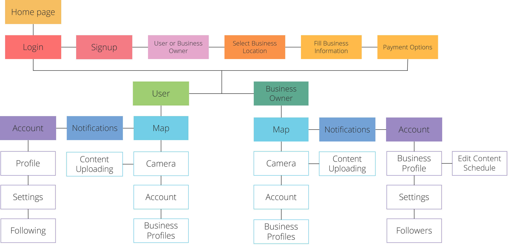

The COVID-19 pandemic has changed the way customers shop and view entertainment. People are reluctant to seek out locally owned establishments for their needs. Left behind are the businesses that struggle to make ends meet as their customers turn to apps on their phones. Coming out of the pandemic, in-person businesses have to adapt to the new post-pandemic population that is accustomed to online shopping and seek a new way of raising awareness of their business.
Glimpse Social
Designed to give you the most immersive experience and updates on events.
Timeframe
2 Years | Sep - Jan '22
Role
Lead Designer - Contract
Tools
XD | Illustrator | After Effects
Problem
Research
User interviews conducted from a survey to get an insight into the preferences of NYC customers and business owners on social media applications.
Personas for customer and a business owner created from user inteviews and online research. Used for prototyping and designing mock ups.
Key insights from research analysis:
- • Seamless two-way communication for both parties
• Integrate principles of material design for visual appeal, ensuring high-quality experience
• Prioritize convenience and simplicity of features to ensure user-friendliness
Proposal
How can we design an experience to bring businesses to the same level of exposure as their online competitors? What may entice customers to view local establishments and drive traffic to these businesses?
Design Process
The Glimpse application provides an outlet for customers to learn about the businesses around them and view exclusive content displayed by owners. On this map, customers are able to view real-time updates and interact with establishments.
Sitemap to determine what features and pages would be valuable for users based on the research and ideation.
User flows designed to make sure the usability and available features were accessible and straightforward.

High Fidelities
- Onboarding
- Profile Page
-
- Animations